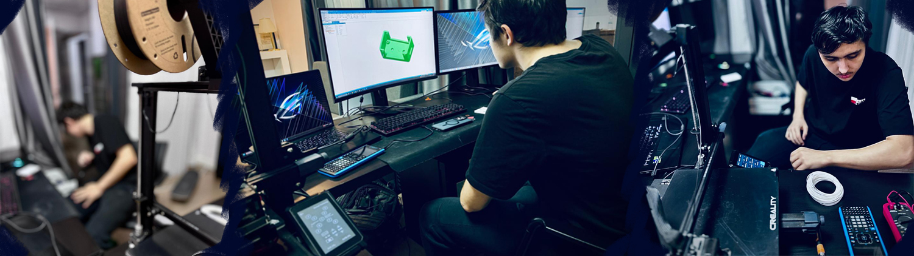

Education
Atasehir Private Bilgin Anatolian High School
Anticipated Graduation: June 2025
- February 2024 – Ongoing
- Istanbul, Turkey
- Transferred to school during Grade 11 to follow the Turkish National High School curriculum in the Mathematics-Sciences concentration
- Relevant Courses: Mathematics, Biology, Chemistry, Physics, Laboratory, Philosophy, Turkish Language and Literature, English
- Distinctions: Received Honors Certificate for high GPA at the end of Grade 11
Fort Lauderdale High School
- 2021 – February 2024
- Fort Lauderdale, FL, USA
- Completed Grades 9 and 10 following the US High School system before transferring during Grade 11
- Relevant Courses: Mathematics, Algebra, Biology, Environmental Management, Communications Technology, English Language and Literature, Spanish, World History
Experience
FLHS 3D Custom Prints
- 2023 – Ongoing
- Complete commissions for projects by customers and delivered 3D-printed products to their specifications
- Design and sell small decorative objects and practical items through Shopify
- Acquired 2 years of hands-on experience in 3D printing and became adept at 3D modeling software such as SolidWorks 3D Experience to create, render, and prototype designs
Lila Kâğıt
Short Internship
- Summer of 2024
- Istanbul, Turkey
- Learned about how the company keeps track of sustainability efforts in areas like corporate governance, human resources and the environment as a global signatory of the United Nations Global Compact per the UN Sustainable Development Goals, ISO 14001 Environmental Management System, ISO 50001 Energy Management System, ISO 45001:2018 Occupational Health and Safety Management System and more, following the Global Reporting Initiative standards for reporting
Leadership Skills

Knowledge Exchange: Additive Manufacturing Primer
- November 2024
- Prepared a summary with academic references for the definition, uses, market potential, and practical information about additive manufacturing, also known as 3D printing, for my peers at Ozel Bilgin High School
- Transformed the information in the summary into a graphic poster and arranged permission to hang them on school walls to raise interest in additive manufacturing among students
Extracurricular Activities
Fort Lauderdale High School Robotics Club
- 2022 – 2023
- Designed and built robots that are tasked to complete certain tasks in competitions as one of the engineers in the club by using the given materials and equipment
- Competed in the VEX Robotics Tournaments in 2023 by designing a robot that could find, pick up, and transport rings to the objective faster than other competitors and ranked in the top 10
Certificates
BilgeAdam Technologies: System and Network Administration Certification
- December 2024
- Gained proficiency in managing IT infrastructures, networks, and systems after completing a 6-month course and building a virtual server as the finishing project
- Set up virtual environments with simulations of system and network administration scenarios and learn how to maintain and optimize secure network environments
ServSafe Food Handling Certification
- Certificate
- December 2022
- Completed a 5-month course as part of the Hospitality and Tourism course at Fort Lauderdale High School
- Learned how different types of foods need to be stored and cooked for health reasons, how cross-contamination can be avoided, how kitchen equipment needs to be cleaned, how to behave in scenarios of floods or power outrages, how to recognize possibly infectious diseases that can be problematic for work, and more
- Received certification in food safety protocols and hygiene necessary to work in the food service industry
Adobe Photoshop Certification
- Certificate
- April 2022
- Completed a tutorial program for Adobe Photoshop as part of the Communications Technology course taken at Fort Lauderdale High School and became an Adobe Certified Professional
- Acquired in-depth skills in image editing and digital art and design after a 5-month advanced course
- Completed image editing and photo manipulation tasks (such as how to remove people from a landscape image, how to restore color to black-and-white or vintage photographs, etc.) as part of examinations
Social Responsibilities
Fort Lauderdale High School Community Service
- 2022 – 2023
- Volunteered to clean up the Las Olas Beach in Florida, USA
- Volunteered for the Be My Eyes application aimed at helping visually impaired users connect with visually abled volunteers who can support them with daily necessities such as finding lost items at home via video calls
- Worked with the association to contribute to a project of adapting signs for the blind by having Braille added
- Helped fundraise for and donated walking sticks to cover a national shortage
Skills
Technical
- SolidWorks 3D Experience Computer-Aided Design (CAD)
- Adobe Photoshop
- Linux systems
- Assemble and upgrade computers
- Diagnose hardware issues
- Solder or otherwise fix motherboards, circuit boards and other hardware problems
Language
- English
- Turkish
- Spanish (Beginner)
- Japanese (Beginner)
Sports
- Water sports
- Skateboarding
- Soccer
Interests
- Playing the guitar